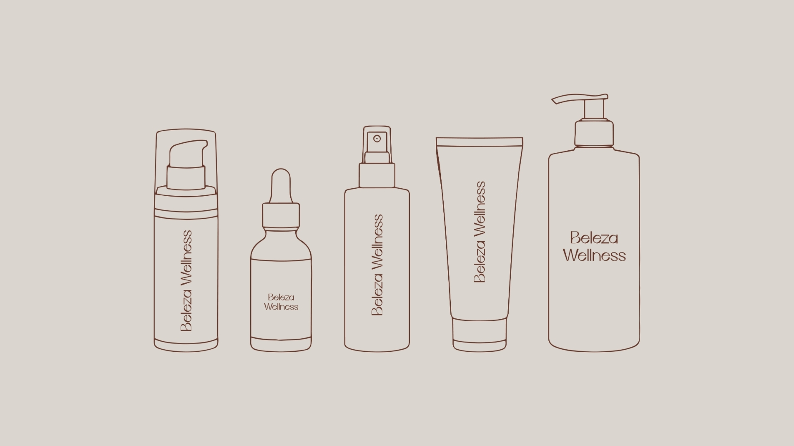
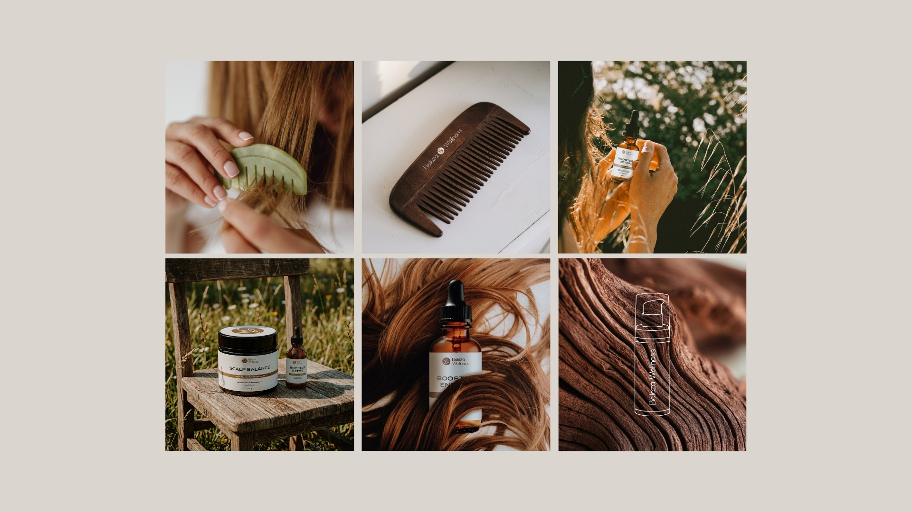
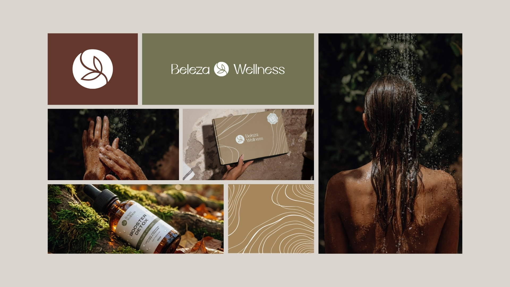
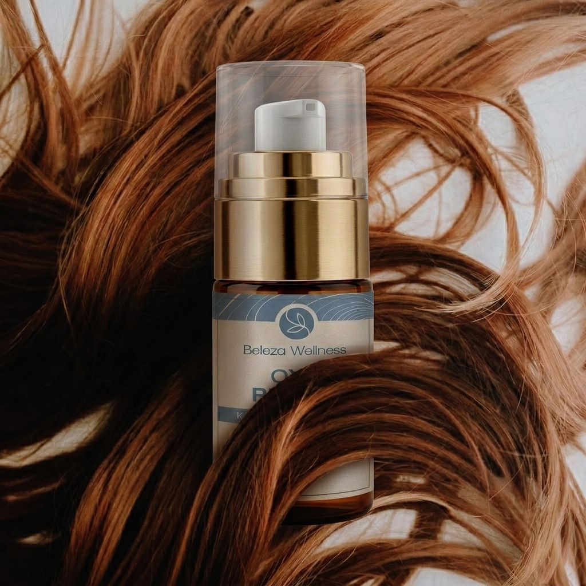
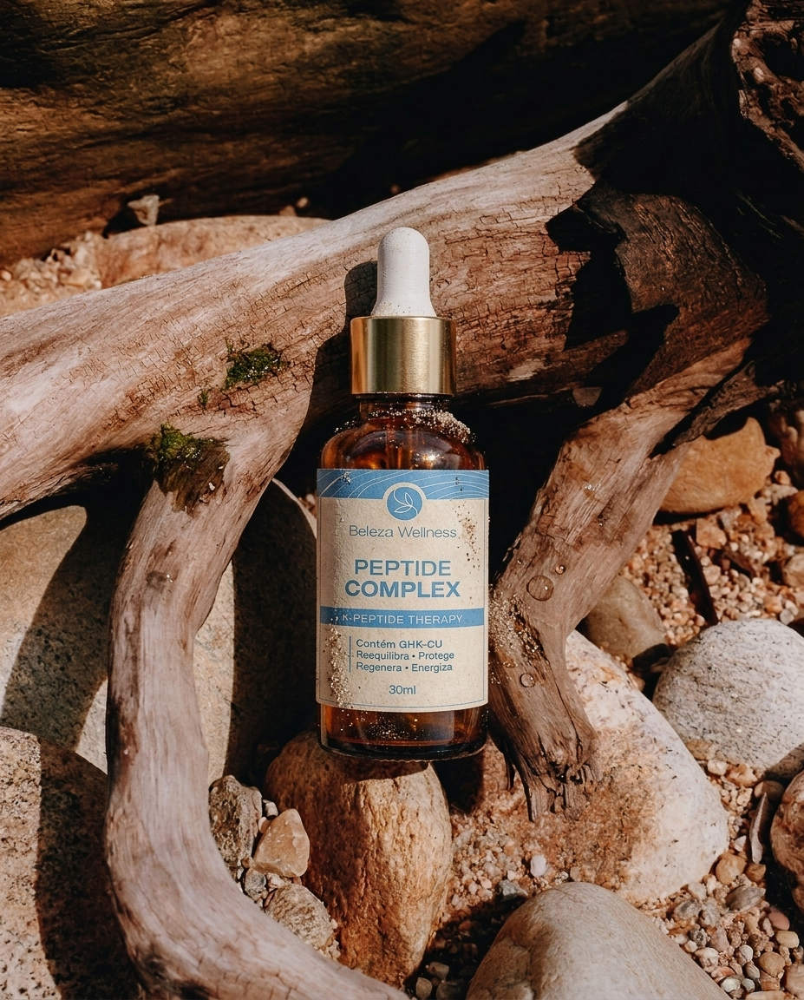
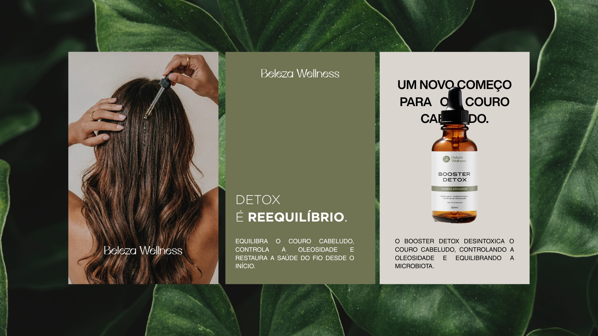

Beleza Wellness
Transformando cuidado capilar em um ecossistema de saúde, ciência e crescimento.
O cuidado começa na raiz. A Beleza Wellness foi reposicionada para comunicar ciência, naturalidade e método em uma experiência visual preparada para crescer.

A Beleza Wellness nasceu em um mercado repleto de promessas superficiais e soluções genéricas para cuidados capilares.
O desafio era construir uma marca capaz de se diferenciar não apenas pela qualidade dos produtos, mas pela profundidade da sua proposta. Era necessário posicionar a empresa além da categoria cosmética, criando uma percepção alinhada à ciência, ao cuidado integrativo e ao desenvolvimento profissional.
Ao mesmo tempo, a marca precisava sustentar uma futura expansão de portfólio, protocolos e programas educacionais, sem perder clareza ou consistência.

O cuidado começa na raiz.
A estratégia partiu de um princípio simples: resultados consistentes exigem mais do que produtos.
A construção da marca foi inspirada na relação entre ciência, natureza e equilíbrio, traduzindo a saúde capilar como reflexo de uma visão mais ampla de bem-estar.
Mais do que vender cosméticos, a Beleza Wellness nasce para oferecer estrutura, método e direcionamento, transformando o cuidado capilar em uma experiência fundamentada em conhecimento e propósito.

Desenvolvemos um rebranding completo capaz de traduzir visualmente a maturidade e o posicionamento da empresa.
A nova identidade foi construída para equilibrar sofisticação, naturalidade e autoridade técnica. O sistema visual incorpora elementos inspirados em ciclos naturais, crescimento orgânico e equilíbrio, reforçando os princípios que sustentam a marca.
Além da identidade institucional, estruturamos a arquitetura visual dos produtos e desenvolvemos o design dos rótulos e embalagens, criando uma linguagem consistente para toda a experiência da marca.
O resultado foi um sistema preparado para acompanhar a evolução da empresa, fortalecendo sua presença no mercado profissional e ampliando sua percepção de valor.


A Beleza Wellness passou a comunicar com mais clareza aquilo que sempre esteve em sua essência: ciência aplicada, cuidado consciente e crescimento sustentável.
A nova identidade fortalece sua autoridade perante profissionais e consumidores, cria diferenciação em um mercado altamente competitivo e estabelece uma base sólida para expansão de produtos, protocolos e novas iniciativas da marca.
Mais do que um rebranding, o projeto transformou a percepção da empresa em um ecossistema estruturado de saúde capilar integrativa.
